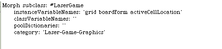
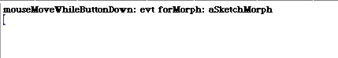
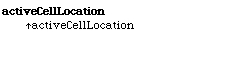
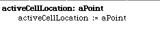
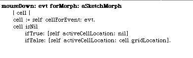
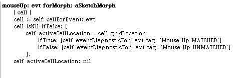
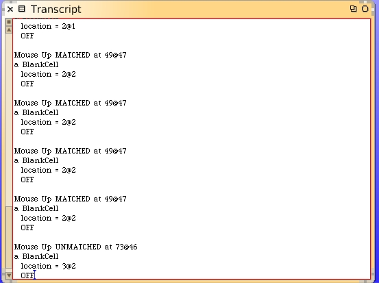

Change the class definition for the LaserGame. We will add a new instance variable to the identifying the location of the active cell. This behavior does not belong on the model. It's part of the GUI behavior and belongs on the morph.
We can get rid of the mouse-down-while-moving log. Then add some accessors for our new instance variable.


Now change the mouse-down method to detect which cell it is and then save away the location.
Now we can use this new information to see if the mouse-up event is on the same cell.
Experiment with your LaserGame morph and watch the Transcript. We are correctly detecting the mouse-up event and know when it's the cell we started with.
